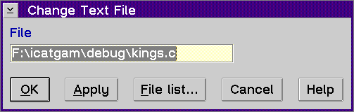

Displays the Change Text File window, which allows you to specify a file name to be used as the source in the current view. This is useful if the debugger found the incorrect source file for your program so that you can specify the use of a different source file from a different directory.
Use the Change Text File window to replace the path name or file name of the program you are debugging with a new path name or file name.
To replace the file name: